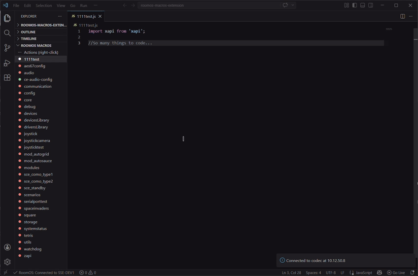

See It In Action
Watch how RoomOS Macros transforms your development workflow

Insert xAPI Stubs
Right-click to generate fully formatted code blocks instantly

Show xAPI Help
Access comprehensive documentation with parameter details

Context Menu
All extension features accessible with a right-click

AI-Assisted Coding
GitHub Copilot and AI agents accelerate your development

Remote Console
Real-time macro output and error logs in VS Code

Profile Management
Configure and manage multiple device profiles easily